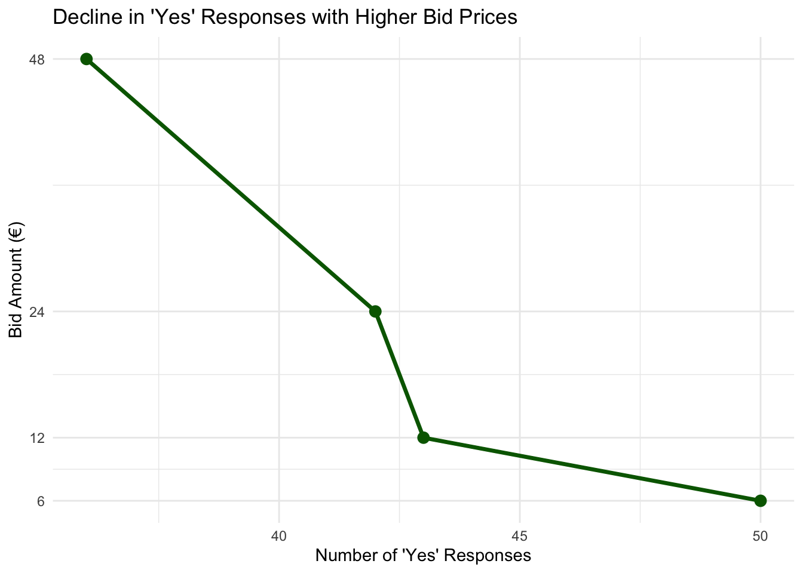
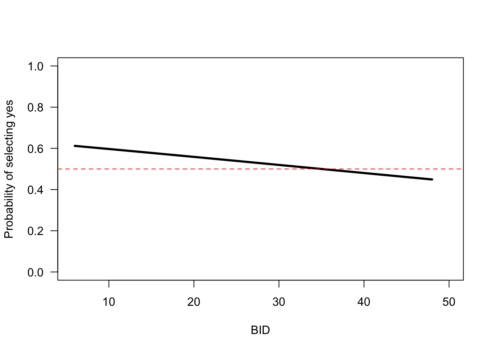

#install.packages("DCchoice",repos = c("http://www.bioconductor.org/packages/release/bioc","https://cran.rstudio.com/"), dep = TRUE)
#install.packages(ggplot2)
#install.packages(dplyr)Contingent Valuation
Stated Preference: CV
The contingent valuation method involves directly asking people, in a survey, how much they would be willing to pay for specific environmental services. In some cases, people are asked for the amount of compensation they would be willing to accept to give up specific environmental services. It is called contingent valuation, because people are asked to state their willingness to pay, contingent on a specific hypothetical scenario and description of the environmental service. This page will go through an adapted version based on James Fogarty and Hideo Aizaki
Packages
Open R. You will need additional packages DCchoice, Ecdat (Croissant and Graves 2020) and lmtest (Zeileis and Hothorn 2002).
After installing the necessary packages, the next step is to load DCchoice, Ecdat, and lmtest into your current R session. The DCchoice package provides the core functions used in our analysis. Additionally, lmtest offers essential tools for model testing. The Ecdat package includes publicly available real-world datasets.
For this example, we’ll use the NaturalParks dataset to demonstrate how contingent valuation (CV) study data can be analyzed.
library(DCchoice)
library(Ecdat)
library(lmtest)
library(ggplot2)
library(dplyr)Load Data
We will use a built-in sample dataset from the Ecdat package. After loading the dataset, you can use the head() function to preview its contents. By default, head() displays the first six rows along with the column names, but you can adjust the number of rows shown by using the n argument. This function is a quick way to get an overview of the dataset’s structure.
# Load the data from Ecdat package
data(NaturalPark, package = "Ecdat")
# Display the first three rows of data
head(NaturalPark, n = 5) bid1 bidh bidl answers age sex income
1 6 18 3 yy 1 female 2
2 48 120 24 yn 2 male 1
3 48 120 24 yn 2 female 3
4 24 48 12 nn 5 female 1
5 24 48 12 ny 6 female 2Data Variables
The NaturalParks (NP) dataset contains seven variables, each representing a specific aspect of the survey responses:
bid1: The initial bid amount (in euros) presented in the first willingness-to-pay (WTP) question. In this dataset, there are four possible bid amounts: 6, 12, 24, and 48.bidh: The higher follow-up bid amount, shown only if the respondent answered “yes” to the initial WTP question.bidl: The lower follow-up bid amount, shown only if the respondent answered “no” to the initial WTP question.answers: A factor variable representing the respondent’s answers to the two WTP questions. The four possible combinations are:nn: no to bothny: no to first, yes to secondyn: yes to first, no to secondyy: yes to both
Since there are four combinations, this factor variable has four levels.
age: Age is grouped into six brackets rather than exact values. Higher bracket numbers correspond to older respondents.sex: A factor variable with two levels: “male” and “female.”income: Income is also grouped into eight brackets. As with age, higher numbers represent higher income levels.
Data Manipulation
The decision identifies what each individual prefers. This is indicated by the “yes” and “no.” The variable needs to be converted into a numerical representation. To do this you will need to write a loop and create a binary indicator for when the individuals says yes to the first bid. This is indicated by the first letter of the variable starting with “y”
NaturalPark$ans1 <- ifelse(NaturalPark$answers == "yy" | NaturalPark$answers == "yn", 1, 0)
# Display the first three rows of data
head(NaturalPark, n = 5) bid1 bidh bidl answers age sex income ans1
1 6 18 3 yy 1 female 2 1
2 48 120 24 yn 2 male 1 1
3 48 120 24 yn 2 female 3 1
4 24 48 12 nn 5 female 1 0
5 24 48 12 ny 6 female 2 0Now we want to count the number of individuals who said yes for each price. This table shows the rows as yes or no for first bid and all the prices.
table(NaturalPark$ans1, NaturalPark$bid1)
6 12 24 48
0 26 34 40 41
1 50 43 42 36The table can be interpreted as follows:
For a bid price of €6, there are 76 survey responses. Out of these, 50 respondents said they would be willing to pay €6, while 26 said they would not.
And so on for higher bid amounts.
As the bid price increases, we expect rationally (from law of demand) there will be a decline in the proportion of “yes” responses, since fewer people are likely to be willing to pay higher amounts for the same environmental improvement.
This pattern is visible in the table, particularly when reading across the row representing “yes” responses (often coded as 1), where the number of affirmative answers drops from 50 to 36, and continues decreasing with higher bids. Lets look at this in a graph.
Data Visualization
To create our demand line, we will first have to convert the data in the right shape form.
yes_data <- as.data.frame(table(NaturalPark$ans1, NaturalPark$bid1)) %>%
rename(Answer = Var1, Bid = Var2, Count = Freq) %>%
filter(Answer == 1) %>%
mutate(Bid = as.numeric(as.character(Bid)))
# Display the first three rows of data
head(yes_data, n = 5) Answer Bid Count
1 1 6 50
2 1 12 43
3 1 24 42
4 1 48 36Now we will use ggplot and visually show how people respond to bid prices:
ggplot(yes_data, aes(x = Count, y = Bid)) +
geom_line(color = "darkgreen", size = 1.2) +
geom_point(color = "darkgreen", size = 3) +
scale_y_continuous(breaks = yes_data$Bid) +
labs(
title = "Decline in 'Yes' Responses with Higher Bid Prices",
x = "Number of 'Yes' Responses",
y = "Bid Amount (€)"
) +
theme_minimal()Warning: Using `size` aesthetic for lines was deprecated in ggplot2 3.4.0.
ℹ Please use `linewidth` instead.
And voilà! There we have a downward sloping demand curve!
People respond to prices which makes sense and suggest that people are responding in a way that they do in reality.
Model Estimation
Now that we have explored the data and tested peoples rational. We are going to estimate the willingness to pay for the contingent valuation question.
For now, we’ll ignore gender, income, and age. The model assumes that a person’s response :
0 (“no, not willing to pay”)
1 (“yes, willing to pay”) depends only on the bid amount (or “price”).
So this model includes just one explanatory variable which is the bid.
Using DCchoice the formula for this type of model is as follows:
model1 <- sbchoice(dep var ~ exp var | bid, dist = "", data = my.data)
Here’s what each part means:
model1: The name we give to save the model results (for example,sb1for the first model).<-: The assignment symbol that stores the model inmodel1.sbchoice: The function that runs the model.dep_var: The dependent variable (the responses coded as 0 = no, 1 = yes). For our first model this isans1.exp_var: The explanatory variables other than the bid amount. Since we don’t have any for the first model, we just use1for the intercept.| bid: This part specifies the bid amount variable, which isbid1in our example.dist = "": Specifies the distribution used; we’ll always use logistic, so it will bedist = "logistic"data = my.data: The data frame that contains the data which in our case isNaturalPark.
After fitting the model, we usually check the results with the summary() function. To focus on the coefficient estimates, we can use coeftest() from the lmtest package.
# A very simple model
sb1 <- sbchoice(ans1 ~ 1 | bid1, dist = "logistic", data = NaturalPark)
coeftest(sb1)
z test of coefficients:
Estimate Std. Error z value Pr(>|z|)
(Intercept) 0.5500450 0.1998739 2.7520 0.005924 **
BID -0.0157223 0.0071807 -2.1895 0.028560 *
---
Signif. codes: 0 '***' 0.001 '**' 0.01 '*' 0.05 '.' 0.1 ' ' 1The most important thing to notice in the model’s coefficients is the negative sign on the bid variable. No matter how the original data is coded, the bid will always show up as BID in the results. This negative sign means that as the bid price goes up, fewer people say “yes” they are less willing to pay that amount!
The results also show that this relationship is statistically significant, meaning it’s unlikely to be due to chance.
Lets see these results visually by using the plot() function. This plot shows the willingness-to-pay data along with a horizontal line marking the point where 50% of people say “yes.” From the plot, you can see that this 50% support happens at about €35.
# plots the predicted support at each bid value
plot(sb1, las = 1)
# adds a horizontal line to the plot
abline(h = 0.5, lty = 2, col = "red") 
Full Estimation
We now look at the full model summary output we get when we use the sbchoice() function:
# Model summary
summary(sb1)
Call:
sbchoice(formula = ans1 ~ 1 | bid1, data = NaturalPark, dist = "logistic")
Formula:
ans1 ~ 1 | bid1
Coefficients:
Estimate Std. Error z value Pr(>|z|)
(Intercept) 0.550045 0.199874 2.752 0.00592 **
BID -0.015722 0.007181 -2.190 0.02856 *
---
Signif. codes: 0 '***' 0.001 '**' 0.01 '*' 0.05 '.' 0.1 ' ' 1
Distribution: logistic
Number of Obs.: 312
log-likelihood: -212.3968
pseudo-R^2: 0.0113 , adjusted pseudo-R^2: 0.0020
LR statistic: 4.841 on 1 DF, p-value: 0.028
AIC: 428.793653 , BIC: 436.279659
Iterations: 4
Convergence: TRUE
WTP estimates:
Mean : 63.95526
Mean : 26.04338 (truncated at the maximum bid)
Mean : 47.26755 (truncated at the maximum bid with adjustment)
Median : 34.98512 The summary output has several parts:
The model we estimated:
Formula: ans1 ~ 1 | bid1 Coefficients: Estimate Std. Error z value Pr(>|z|) (Intercept) 0.550045 0.199874 2.752 0.00592 ** BID -0.015722 0.007181 -2.190 0.02856 * --- Signif. codes: 0 ‘***’ 0.001 ‘**’ 0.01 ‘*’ 0.05 ‘.’ 0.1 ‘ ’ 1The second part shows the model’s coefficients and whether they are statistically significant.
Distribution: logistic Number of Obs.: 312 log-likelihood: -212.3968 pseudo-R^2: 0.0113 , adjusted pseudo-R^2: 0.0020 LR statistic: 4.841 on 1 DF, p-value: 0.028 AIC: 428.793653 , BIC: 436.279659The third part shows how well the model fits the data. This helps us compare different models. It’s important to see “Convergence: TRUE,” which means the model worked properly. If not, you’ll get an error.
Iterations: 4 Convergence: TRUEThe fourth part shows the estimated average and median willingness to pay (WTP). Lets take a moment here
WTP estimates: Mean : 63.95526 Mean : 26.04338 (truncated at the maximum bid) Mean : 47.26755 (truncated at the maximum bid with adjustment) Median : 34.98512
1. Mean WTP
Value: Value: 63.95
This estimate can be calculated by taking the coefficient of the estimation on bid:
\(1/\beta_{bid} = 1/-0.015722=63.95\)
This is the unbounded mean and its calculated using the full range of the estimated distribution of WTP, even beyond your maximum bid.
How it’s calculated:
Uses the model’s estimated coefficients to integrate the WTP distribution from 0 to infinity (or theoretically negative infinity to positive infinity depending on the model).
Issue: May overestimate WTP, especially if the upper tail is long (which it often is).
medianWTP=1/sb1$coefficients[2]
medianWTP BID
-63.6041 2. Mean WTP (truncated at max bid)
Value: 26.04
This is the mean WTP truncated at the maximum bid in your data.
\(1/\beta_{bid}(1+exp(\beta_0+\sum(\beta_nZ_n)))\)
How it’s calculated:
Integration is limited from 0 up to the highest bid amount offered in your survey.
Why: This avoids overestimating WTP from extrapolating too far beyond your data.
medianWTP * (log(1 + exp(sb1$coefficients[1] + sb1$coefficients[2] * max(NaturalPark$bid1))) - log(1 + exp(sb1$coefficients[1]))) BID
26.04338 3. Mean WTP (truncated with adjustment)
#Value: 47.27
This is the same as #2 but with a correction applied to adjust for truncation bias.
How it’s calculated:
Still truncated at the max bid, but includes a bias-correction factor based on the distribution. the truncated mean WTP with the adjustment of Boyle et~al.(1988)
Why: Balances realism (truncation) with statistical accuracy (adjustment).
4. Median WTP
Value: 34.99
This is the bid level at which 50% of respondents are predicted to say “yes”.
How it’s calculated:
\(-(\alpha/\beta_{bid})\)
It’s the bid where the predicted probability of saying “yes” is 0.5, based on your model.
Why: Commonly used because it’s less sensitive to skewed data than the mean.
-sb1$coefficients[1]/sb1$coefficients[2](Intercept)
34.98512